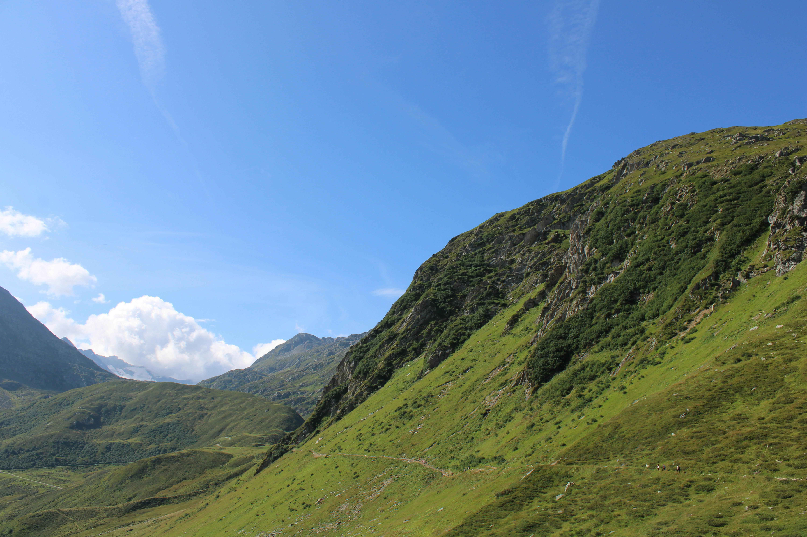

Ein Gebirge ist eine Landschaft mit mehreren Bergen, Tälern und Hochflächen. Oft kann man den Unterschied zwischen dem Gebirge und dem ebenen, flachen Land drumherum gut erkennen. Manchmal sind um das Gebirge herum aber auch kleinere Hügel, dann sieht man den Unterschied nicht so gut.
Es gibt verschiedene Formen von Gebirgen. Ein Kammgebirge zum Beispiel heißt so, weil mehrere Bergspitzen wie bei einem Kamm in einer Reihe stehen. Bei einem Tafelgebirge gibt es manchmal gar keine richtigen Gipfel, sondern nur eine hoch liegende Ebene, wie bei einem großen Tisch.
Auch die Höhe ist wichtig. Von ungefähr 500 bis 1500 Metern spricht man von einem Mittelgebirge. Solche Gebirge findet man zum Beispiel in der Mitte und im Süden von Deutschland. Ein Mittelgebirge ist auch der Jura in Frankreich und in der Schweiz. Das Hochgebirge fängt erst bei 1500 Metern an. Ein solches gibt es auch in Europa, nämlich die Alpen. Sie erstrecken sich über Italien, Frankreich, die Schweiz und Österreich bis nach Ungarn.

Bild von Geula Prochazka auf Unsplash
Wissenschaftler unterscheiden Gebirge aber vor allem danach, wie sie entstanden sind. Manche Berge sind zum Beispiel erloschene Vulkane, wie der Vogelsberg in Hessen oder ein Teil der Eifel. Bei Bruchschollen-Gebirgen wurden Stücke der Erdkruste durch gewaltige Kräfte im Erdinnern angehoben, während die Umgebung sich absenkte. Viele deutsche Mittelgebirge sind so entstanden. Wieder andere Gebirge entstanden als riesige Falten des Erdbodens, weil Kontinente über lange Zeit mit großer Kraft aneinanderstoßen. Die meisten Hochgebirge der Welt sind solche Faltengebirge, so der Himalaya in Asien, die Anden in Südamerika oder auch die Alpen in Europa.